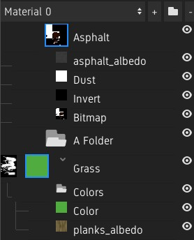

The Layer Stack¶
Overview¶
The layer stack shows the layers that are blended to create the final material.
It consists of “Material Layers” which can have different channels enabled, for example normal or albedo. Each channel has a separate list of “Texture Layers” which make up the texture, for example color, bitmap or file layers. Each layer can be renamed by double-clicking it.
Folders¶
Folders can be used on the Material Layer and Texture Layer level to organize and optimize the material.
Masks¶
Masks can be added to Material Layers and Material Folders by right clicking and selecting “Add Mask”. They will be used when blending the layers. Light values will make the layer opaque and black values will make it transparent.